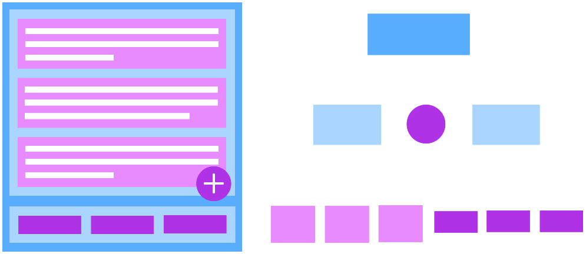
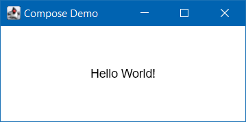

Compose Multi-Platform is a Kotlin framework for creating UIs that work across multiple platforms including Windows, MacOS, Linux, Android and iOS. It is based on the Android Jetpack Compose library and is developed by JetBrains.
A UI is defined as a heirarchy of components. Here is an example UI layout and its corresponding component tree...

Example
fun main() = singleWindowApplication(
title = "Compose Demo"
) {
App()
}
@Composable
fun App() {
Box(
modifier = Modifier.fillMaxSize(),
contentAlignment = Alignment.Center
) {
Text("Hello World!")
}
}

Useful Links
The guides and examples on this site cover creating relatively simple UIs for desktop using some of the key features of this powerful framework.
However, Compose MP can create all sorts of complex, composable, reactive UIs that run natively across a wide variety of devices and operating systems.
These sites introduce Compose and have good examples of Compose in-use:
And these are the home of Compose Multi-Platform: